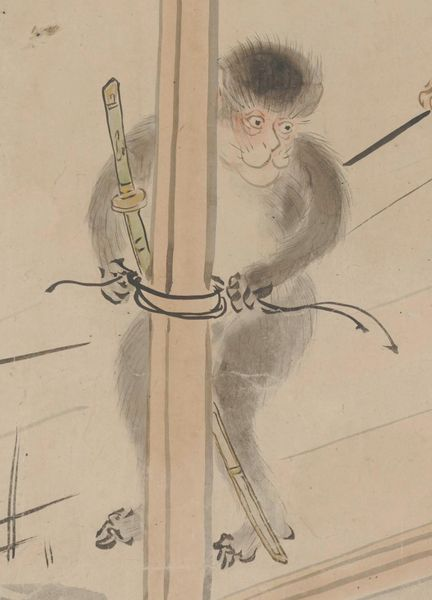

← 图鉴索引

猿が人間のほうを見ながら、柱に縛り付けられた刀の紐をつかんでいる。
出典：親書誌：U426_nichibunken_0435：［妖怪絵巻］／日付：2017／資源識別子：U426_nichibunken_0435_0001_0036
Copyright (c)2010- International Research Center for Japanese Studies, Kyoto, Japan. All rights reserved.